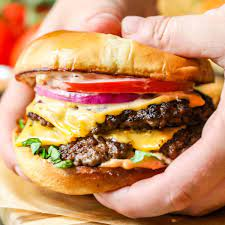

World's Best Burger

Best Smash Burger
Making Smash Burgers can be time-consuming, but the results are well worth the wait. You'll find a detailed ingredient list and step-by-step instructions in the recipe below, but let's go over the basics:
Ingredients:
- Beef
- Buns
- Your favorite beef seasoning
Steps:
- Combine your beef and seasoning in a bowl
- Seperate into 1/4 pound patties
- Heat griddle to 450 degrees
- Use parchment paper to press the burgers on the grill flat
- Place burgers on a bun and serve with your favorite sauce